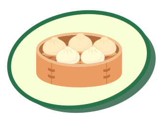
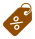

Find the Market Price
b4_wg184_261104_01A busy street market has dozens of momo stalls and hundreds of buyers. No single person sets the price here. Find the price where the market clears. Then take charge of the news desk and predict how real events move the whole market.

Market equilibrium, and what moves it
The market clears where Qs = Qd. A change in the price moves you along the curves. A change in anything else, tastes, incomes, costs, technology, the number of buyers or sellers, moves a whole curve, and the equilibrium price and quantity move with it. Real markets are never still: they are always adjusting towards a new equilibrium.
- 1Find it
- 2Explain
- 3News days
Find the market-clearing price
Pick a price and open the market.
When Qs = Qd, the market clears.

Market boardComparison
One last check
Suppose the price were pushed up to ₹90 a plate. In a free market, what happens next?
Which curve moves, and which way?
Before we print the graph: what happens to the market price?
Locked in. Printing the graph...
Your market, your experiment
The news desk is closed. Now shift either curve yourself and watch the equilibrium chase the changes. The price finds its own level: you no longer control it, the market does.
- Price per plate
- Buyers want (Qd)
- Sellers offer (Qs)
Market equilibrium, and what moves it
The market clears where Qs = Qd. A change in the price moves you along the curves. A change in anything else, tastes, incomes, costs, technology, the number of buyers or sellers, moves a whole curve, and the equilibrium price and quantity move with it. Real markets are never still: they are always adjusting towards a new equilibrium.
Everything else stays the same while you test prices: only the price moves. When Qs < Qd there is excess demand, a shortage. When Qs > Qd there is excess supply, a surplus. Below ₹45 no seller opens a stall, because the price does not cover their costs. In the news days, one outside factor changes and you will watch a whole curve move.